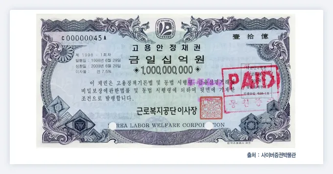

채권
채권은 중앙 정부나 지방 정부, 공기업, 금융기관, 회사, 기타 법인들이 정책이나 사업을 시행하기 위한 자산을 조성하기 위해 돈을 빌렸으면 정해진 기한 후 돌려주겠다는 채무증서를 증권화한 것이다.
쉽게 말해 사고 파는 빚문서. 일반적인 대출과 달리 자금을 공급받는 기관들이 기업이나 국가같이 일반적인 사람간 거래보다 신용도가 훨씬 크다는 것에 착안, 그 빚문서를 거래가능한 유가증권 형태로 만들어 불특정 다수로부터 돈을 빌릴 수 있게 하는 제도가 만들어졌다. 즉, 기관 입장에서 채권을 발급하면 불특정 다수에게 돈을 빌릴 수 있게 되는 것이고, 돈을 빌려준 사람 입장에선 빚문서를 사고팔 수 있게 되었다.
그러다보니 일단 빚 문서 거래시장이 존재하는 이상 수요와 공급의 원리가 빚문서라고 적용되지 않을 이유가 없다. 결국 채권의 신용도, 만기기한 등 여러 조건에 따라 나름의 방식에 따른 실물 경제가치를 지니게 되어 채권을 발행하는 1차시장에 더해 채권을 거래하고 유통하는 2차시장을 형성하게 되었다. 현대 와서는 가계나 기업, 정부 등의 각 경제적 주체가 자산관리를 위해 가능한 선택 중 하나가 된 상황이다.
최초의 채권은 기원전 2400년 수메르까지 거슬러 올라갈 수 있으나, 최초의 채권시장은 12세기의 베네치아에서 5% 이율의 전쟁 채권을 발행하면서부터 시작한 걸로 본다. 이때 발행된 채권은 판매와 구매가 가능했기 때문에 최초의 채권 시장이 형성될 수 있었고, 시장에선 현대와 비슷한 방식으로 채권가치를 산정해 매매결정을 내리기까지 했다고 한다.
출처 : 나무위키